En proformafaktura er et foreløpig regnskapsdokument som utstedes før levering av varer eller tjenester, og fungerer som et estimat eller tilbud på fremtidige transaksjoner. Proformafakturaer brukes hovedsakelig i internasjonal handel for å gi tollmyndigheter og kjøpere informasjon om planlagte leveranser før den faktiske handelen finner sted.
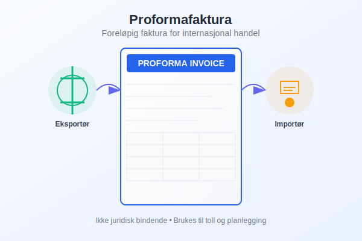
Hva er en Proformafaktura?
En proformafaktura er et dokument som ligner en vanlig faktura, men som ikke representerer en faktisk salgsavtale eller krav om betaling. I stedet fungerer den som:
- Informasjonsdokument: Gir detaljert informasjon om varer, priser og leveringsbetingelser
- Planleggingsverktøy: Hjelper kjøpere med budsjettplanlegging og kontantstrømstyring
- Tolldokument: Brukes av tollmyndigheter for å vurdere avgifter og behandle importlisenser
- Kredittvurdering: Gir banker og finansinstitusjoner grunnlag for å vurdere remburs og andre finansieringsløsninger
Forskjell fra Vanlig Faktura
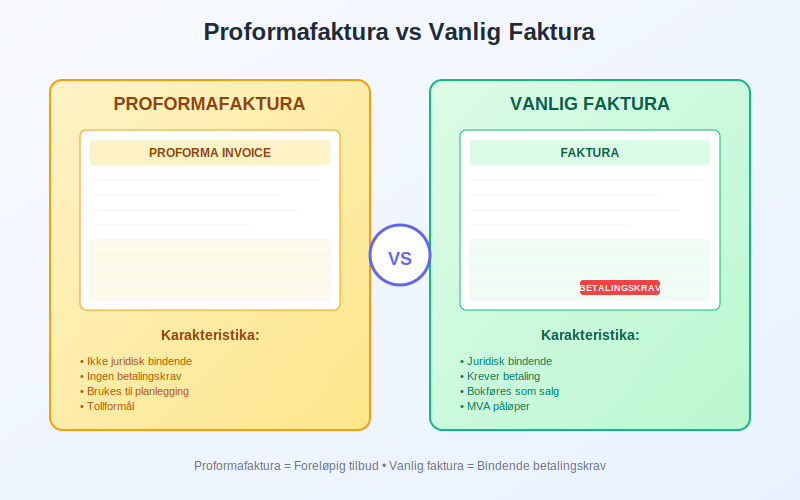
| Aspekt | Proformafaktura | Vanlig Faktura |
|---|---|---|
| Juridisk status | Ikke bindende | Juridisk dokument |
| Betalingskrav | Nei | Ja |
| Regnskapsføring | Ingen bokføring | Bokføres som salg |
| MVA-behandling | Ingen MVA | Merverdiavgift påløper |
| Formål | Informasjon og planlegging | Fakturering og oppgjør |
Når Brukes Proformafakturaer?
Proformafakturaer har flere viktige anvendelsesområder i moderne forretningsdrift:
1. Internasjonal Handel
I eksport og import brukes proformafakturaer til:
- Tolldeklarasjon: Grunnlag for beregning av toll og avgifter
- Importlisenser: Søknad om nødvendige tillatelser
- Valutakontroll: Dokumentasjon overfor myndighetene
- Forsikring: Grunnlag for transportforsikring
2. Tilbudsgivning
- Detaljerte pristilbud: Spesifiserer nøyaktig hva som leveres som del av tilbudsprosessen
- Langsiktige avtaler: Grunnlag for forhandlinger om rammeavtaler
- Komplekse prosjekter: Oversikt over kostnader og leveranser
3. Finansiering og Kreditt
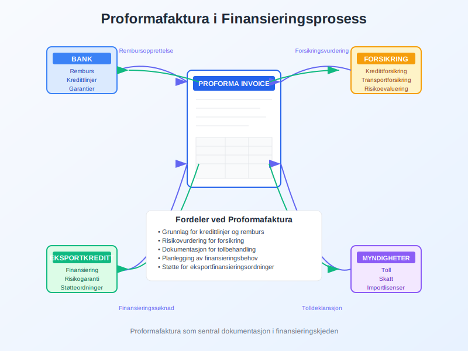
- Rembursopprettelse: Grunnlag for å etablere remburs
- Bankgarantier: Dokumentasjon for garantiutstedelse
- Kredittforsikring: Vurdering av handelsrisiko
- Finansieringsløsninger: Grunnlag for eksportfinansiering
Innhold i en Proformafaktura
En profesjonell proformafaktura bør inneholde følgende informasjoner:
Grunnleggende Informasjon
- Selgeropplysninger: Firmanavn, adresse, organisasjonsnummer
- Kjøperopplysninger: Kundens navn og adresse
- Dokumentnummer: Unik referanse for sporing
- Utstedelsesdato: Når proformafakturaen ble laget
- Gyldighetsdato: Hvor lenge tilbudet er gyldig
Vareopplysninger
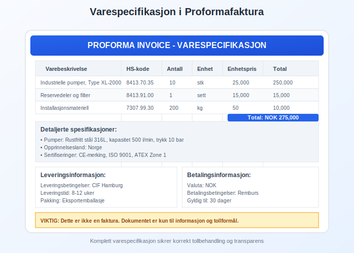
- Detaljert varebeskrivelse: Spesifikasjoner, kvalitet, standard
- HS-koder: Harmonized System-koder for tollformål
- Mengde og enhet: Antall, vekt, volum
- Enhetspris og totalpris: I relevant valuta
- Opprinnelsesland: Hvor varene produseres eller kommer fra
Leveringsinformasjon
- Leveringsbetingelser: Incoterms (FOB, CIF, DDP, etc.)
- Leveringssted: Destinasjon for leveransen
- Leveringstid: Estimert leveringsdato
- Pakking og merking: Spesifikasjoner for emballasje
- Transportmåte: Skip, fly, lastebil, tog
Betalingsinformasjon
- Betalingsbetingelser: Betalingsmåte og frister
- Valuta: Hvilken valuta som brukes
- Bankopplysninger: For internasjonale overføringer
- Forsikring: Dekning av transport og varer
Regnskapsbehandling av Proformafakturaer
For Selgeren
Proformafakturaer har ingen direkte regnskapseffekt siden de ikke representerer faktiske salg:
- Ingen omsetning: Ikke bokført som salg
- Ingen MVA: Merverdiavgift påløper ikke
- Ingen kundefordring: Skaper ikke fordring på kunden
Oppfølging og Konvertering
Når proformafakturaen konverteres til en faktisk salgsordre:
| Aktivitet | Regnskapseffekt |
|---|---|
| Ordrebekreftelse | Ingen bokføring |
| Leveranse | Salg bokføres |
| Fakturering | Kundefordring opprettes |
| Betaling | Innbetaling registreres |
For Kjøperen
Proformafakturaer kan brukes til:
- Budsjettplanlegging: Estimere fremtidige innkjøpskostnader
- Kassaflytplanlegging: Planlegge betalingsforpliktelser
- Tollforberedelser: Grunnlag for importberegninger
- Kredittsøknader: Dokumentasjon av planlagte kjøp
Digitalisering av Proformafakturaer
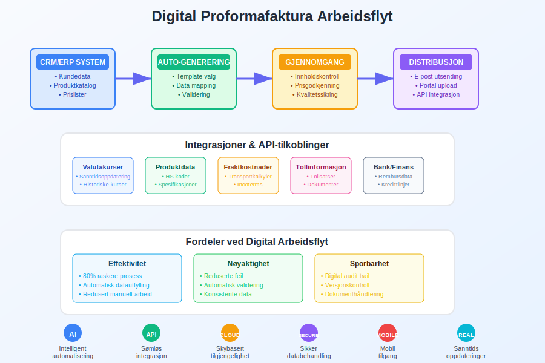
Moderne teknologi har transformert håndteringen av proformafakturaer:
Elektroniske Løsninger
- Automatisk generering: Fra tilbudssystemer til proformafaktura
- Integrasjon: Kobling med ERP-systemer
- Sporbarhet: Digital sporing av dokumenter
- Godkjenningsrutiner: Elektroniske arbeidsflyter
Fordeler med Digital Håndtering
- Reduserte kostnader: Mindre papirarbeid og porto
- Raskere behandling: Øyeblikkelig utsendelse og mottak
- Bedre nøyaktighet: Automatisert datautfylling
- Miljøvennlig: Redusert papirforbruk
- Enklere arkivering: Digital oppbevaring og søk
API-integrasjoner
Moderne bedrifter bruker API-integrasjoner for:
- Automatisk datauthenting: Fra produktkataloger og prislister
- Valutaoppdateringer: Sanntids valutakurser
- Kundedata: Automatisk utfylling av kundedetaljer
- Leveringsberegninger: Dynamiske fraktkostnader
Juridiske Aspekter
Kontraktsmessig Status
Proformafakturaer er ikke juridisk bindende med mindre eksplisitt angitt:
- Tilbudsstatus: Betraktes som tilbud, ikke aksept
- Endringsforbeholt: Priser og betingelser kan endres
- Gyldighetsperiode: Tidsbegrenset tilbud
- Ansvarsbegrensning: Normalt ingen erstatningsansvar
Juridisk Dokumentasjon
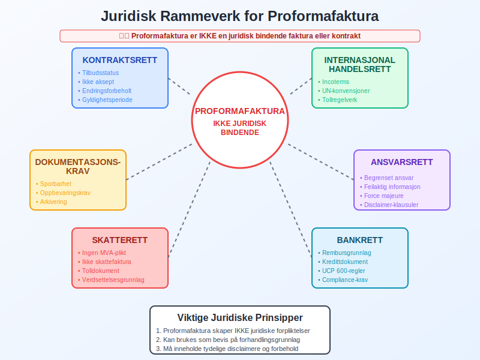
Ved tvister eller misforståelser kan proformafakturaer brukes som:
- Intensjonsdokument: Bevis på forhandlingsgrunnlag
- Kommunikasjon: Dokumenter utveksling av informasjon
- Referansedokument: Grunnlag for senere avtaler
- Kvalitetsspesifikasjon: Detaljert beskrivelse av produkter
Internkontroll og Rutiner
Godkjenningsprosess
Etabler klare rutiner for utstedelse av proformafakturaer:
- Autorisasjon: Hvem kan utstede proformafakturaer
- Innholdskontroll: Sjekkliste for nødvendig informasjon
- Prisgodkjenning: Kontroll av priser og rabatter
- Gyldighetskontroll: Vurdering av tilbudsperiode
Oppfølgingsrutiner
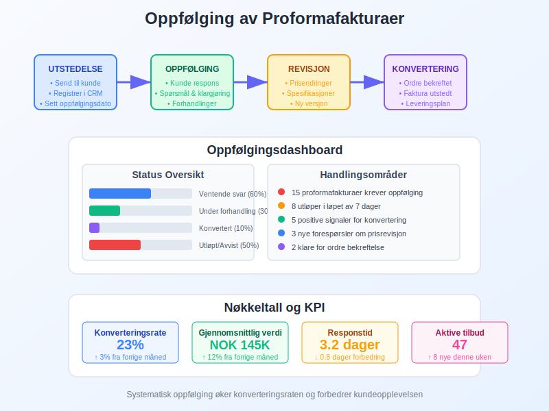
- Statussporing: Følge opp kunderespons
- Konverteringsovervåking: Måle hvor mange som blir faktiske ordrer
- Revisjoner: Oppdatere priser og betingelser ved behov
- Arkivering: Systematisk oppbevaring av dokumenter
Kvalitetssikring
- Standardmaler: Bruk forhåndsdefinerte maler
- Datavalidering: Automatisk kontroll av tall og beregninger
- Språkkontroll: Sikre korrekt terminologi og oversettelser
- Lovlighetssjekk: Kontrollere at informasjonen er korrekt
Internasjonale Standarder og Praksis
WTO og Handelsfasilitering
Verdens Handelsorganisasjon (WTO) anbefaler standardisering av proformafakturaer for å:
- Redusere handelshindringer: Enklere grensepassering
- Øke transparens: Tydelige og enhetlige dokumenter
- Fremme digitalisering: Elektronisk dokumentutveksling
- Støtte utviklingsland: Kapasitetsbygging innen handelsdokumentasjon
UNCITRAL-standarder
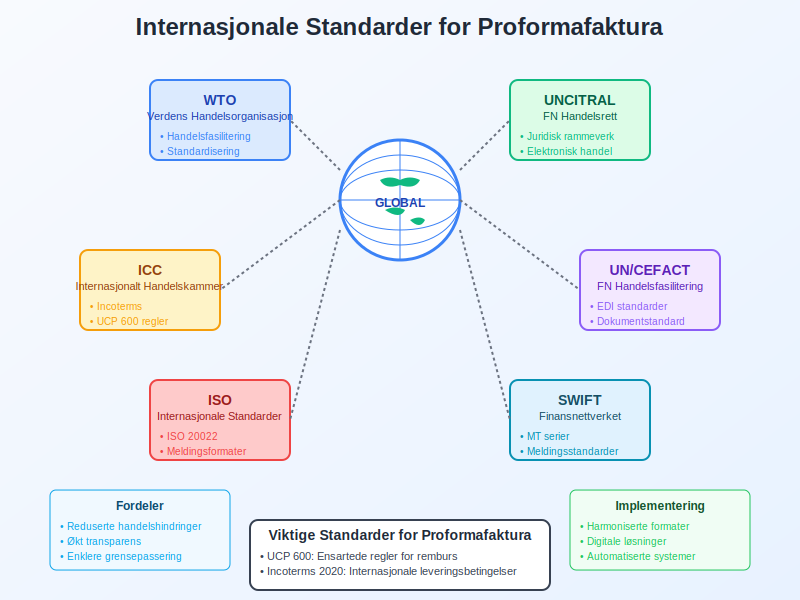
FNs Kommisjon for Internasjonal Handelsrett har utviklet retningslinjer for:
- Elektronisk handel: Digitale signaturer og autentisering
- Dokumentstandarder: Enhetlige krav til innhold
- Tverrgrensing: Harmonisering av nasjonale regelverk
- Konfliktløsning: Mekanismer for handelsconflictes
Bransjespesifikke Anvendelser
Produksjonsbedrifter
I produksjonsbedrifter brukes proformafakturaer til:
- Tilpassede produkter: Spesifikasjoner for skreddersydde løsninger
- Lange produksjonstider: Prisgaranti over produksjonsperioden
- Komplekse komponenter: Detaljerte tekniske beskrivelser
- Kvalitetsstandarder: Spesifikasjoner for testing og sertifisering
Servicebedrifter
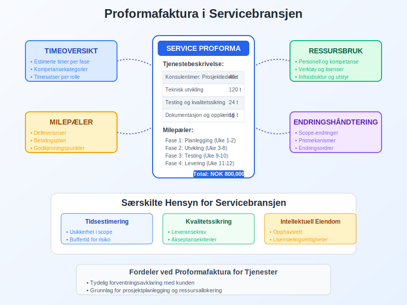
For servicebedrifter inkluderer proformafakturaer:
- Arbeidstimer: Estimerte timer for prosjektgjennomføring
- Ressursbruk: Materiale og utstyr som kreves
- Milepæler: Delleveranser og betalingsplan
- Endringshåndtering: Prosedyrer for scope-endringer
Handelsbedrifter
I handel fokuserer proformafakturaer på:
- Leveringskapasitet: Tilgjengelighet og lagerstatus
- Sesongvariasjoner: Priser og tilgjengelighet over tid
- Volumrabatter: Pristrapper basert på kvantum
- Markedsvolatilitet: Prisgarantier og justeringsmekanismer
Fremtidige Trender
Blockchain og Smart Contracts
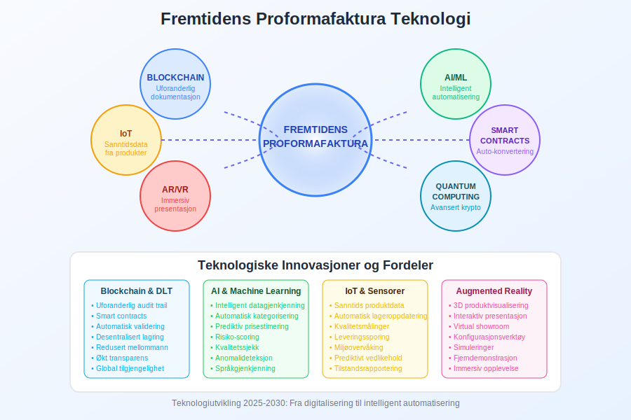
Nye teknologier vil påvirke proformafakturaer:
- Blockchain-dokumentasjon: Uforanderlig sporing av dokumenter
- Smart contracts: Automatisk konvertering til bindende avtaler
- IoT-integrasjon: Sanntidsdata fra produkter og leveranser
- AI-optimalisering: Intelligent prisberegning og risikovurdering
Bærekraft og ESG
Økende fokus på miljø, samfunn og styring (ESG) påvirker:
- Karbonfotavtrykk: Inkludering av miljødata i dokumenter
- Leverandørkjeden: Transparens om produksjonsbetingelser
- Sosiale standarder: Dokumentasjon av arbeidsforhold
- Sirkulær økonomi: Informasjon om gjenbruk og resirkulering
Beste Praksis for Proformafakturaer
Design og Layout
- Tydelig merking: Marker dokumentet som “PROFORMA INVOICE”
- Profesjonelt utseende: Konsistent branding og layout
- Strukturert informasjon: Logisk oppbygging av data
- Flere språk: Oversettelser for internasjonale kunder
Risikohåndtering
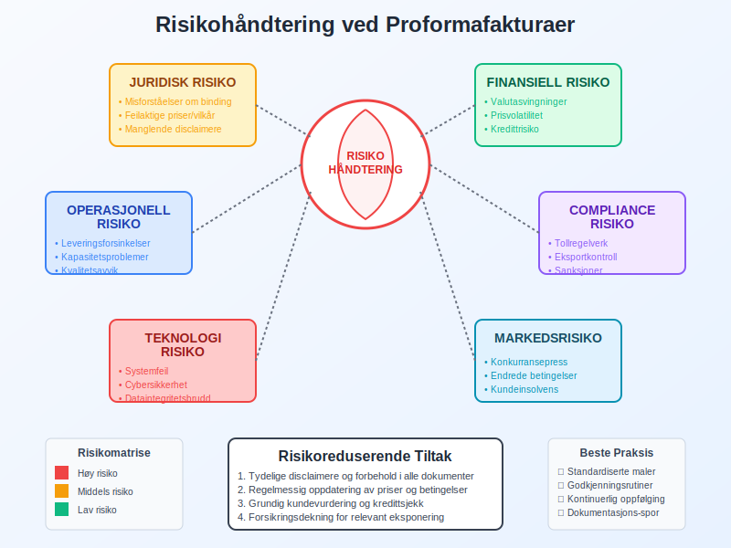
- Disclaimere: Tydelige forbehold om endringer
- Gyldighetsperioder: Klare tidsfrister for tilbud
- Prisvolatilitet: Mekanismer for prisjusteringer
- Force majeure: Klausuler om uforutsette hendelser
Kundeopplevelse
- Rask respons: Kort tid fra forespørsel til proformafaktura
- Personalisering: Tilpasset kundens behov og marked
- Oppfølging: Proaktiv kommunikasjon om status
- Rådgivning: Hjelp med tollprosedyrer og finansiering
En godt utformet proformafaktura er et kraftfullt verktøy for å bygge tillit, legge til rette for internasjonal handel og sikre smidig behandling av komplekse transaksjoner. Ved å følge beste praksis og holde seg oppdatert på teknologiske utviklinger kan bedrifter maksimere verdien av dette viktige handelsdokumentet.